Illustrious 対応 おすすめLoRA一覧
対応モデルごとに分類されたLoRA一覧です。各カテゴリーを選択してください。全 985 ファイル。
loras (1)
Flux (168)
Illustrious (196)
Pony (104)
SD1.5 (264)
SDXL (23)
Unknown (124)
WanVideo (106)
Illustrious (96 items on this page / Total 196 items)

Illustrious
全般
Aino Minako
「Aino Minako」に特化した追加学習モデルです。Stable DiffusionでのAI画像生成にLoRAを導入し、特定要素の再現性を劇的に向上。効率的かつ高品質なビジュアルを求める全てのAI絵師必見のモデルです。
Size: 228,458,540 bytes
Illustrious
全般
akizukikaini-10(ILL)
「akizukikaini-10(ILL)」に特化した追加学習モデルです。Stable DiffusionでのAI画像生成にLoRAを導入し、特定要素の再現性を劇的に向上。効率的かつ高品質なビジュアルを求める全てのAI絵師必見のモデルです。
Size: 50,933,028 bytes

Illustrious
全般
Alp Style 2.0
「Alp Style 2.0」に特化した追加学習モデルです。Stable DiffusionでのAI画像生成にLoRAを導入し、特定要素の再現性を劇的に向上。効率的かつ高品質なビジュアルを求める全てのAI絵師必見のモデルです。
Size: 101,574,036 bytes
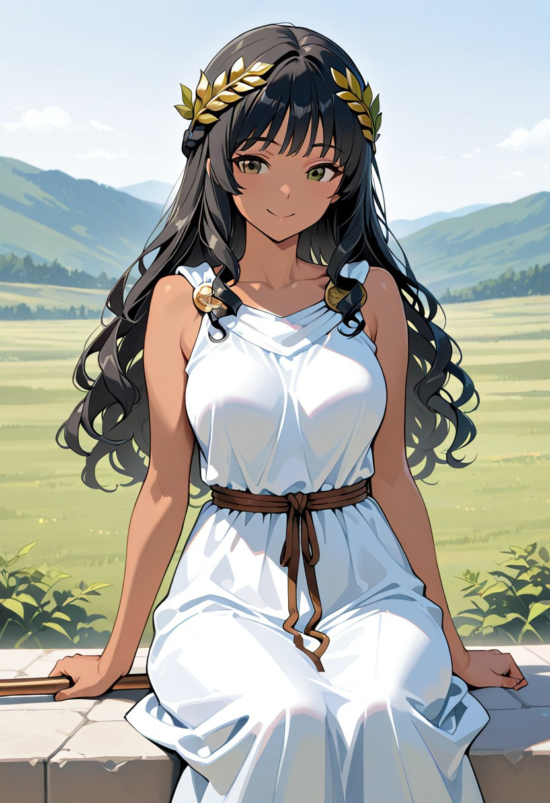
Illustrious
全般
Anime_Style_Ancient_Greek_Toga__Chiton
「Anime_Style_Ancient_Greek_Toga__Chiton」に特化した追加学習モデルです。Stable DiffusionでのAI画像生成にLoRAを導入し、特定要素の再現性を劇的に向上。効率的かつ高品質なビジュアルを求める全てのAI絵師必見のモデルです。
Size: 228,457,108 bytes
Illustrious
全般
Anime_Style_Japanese_Kimono_Dress
「Anime_Style_Japanese_Kimono_Dress」に特化した追加学習モデルです。Stable DiffusionでのAI画像生成にLoRAを導入し、特定要素の再現性を劇的に向上。効率的かつ高品質なビジュアルを求める全てのAI絵師必見のモデルです。
Size: 228,459,668 bytes
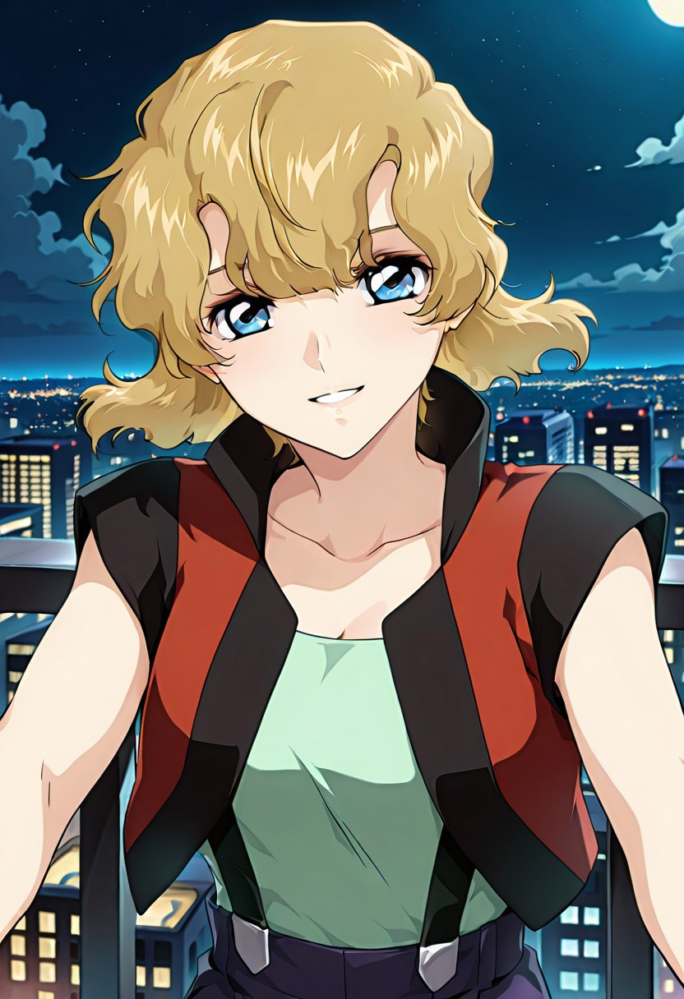
Illustrious
全般
Asagi2
「Asagi2」に特化した追加学習モデルです。Stable DiffusionでのAI画像生成にLoRAを導入し、特定要素の再現性を劇的に向上。効率的かつ高品質なビジュアルを求める全てのAI絵師必見のモデルです。
Size: 228,454,452 bytes
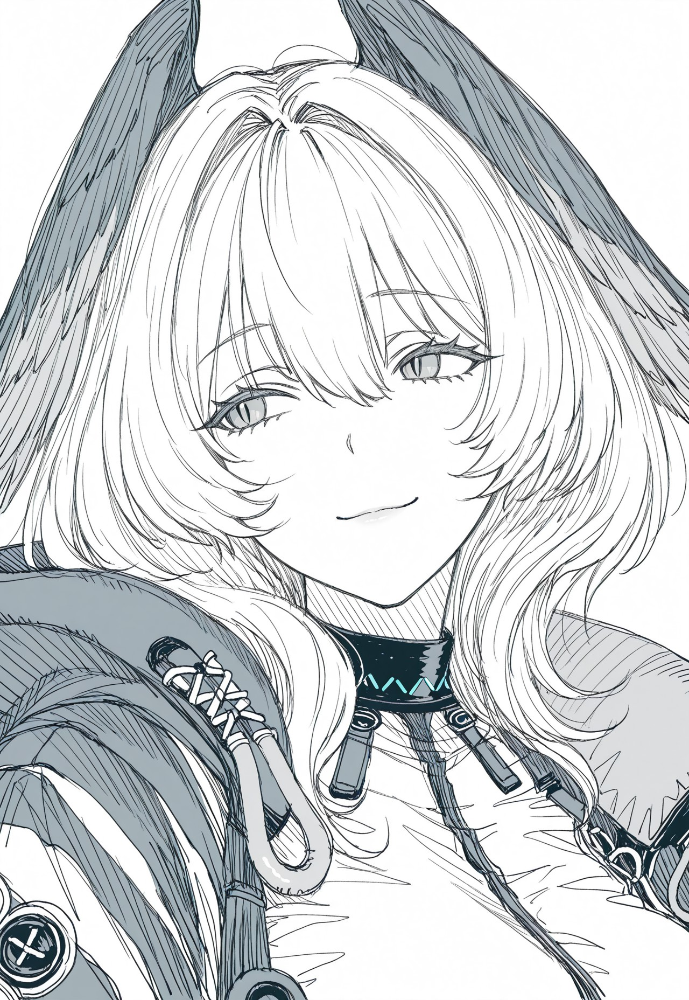
Illustrious
全般
BirdHatter
「BirdHatter」に特化した追加学習モデルです。Stable DiffusionでのAI画像生成にLoRAを導入し、特定要素の再現性を劇的に向上。効率的かつ高品質なビジュアルを求める全てのAI絵師必見のモデルです。
Size: 57,433,772 bytes

Illustrious
全般
BladePointIL
「BladePointIL」に特化した追加学習モデルです。Stable DiffusionでのAI画像生成にLoRAを導入し、特定要素の再現性を劇的に向上。効率的かつ高品質なビジュアルを求める全てのAI絵師必見のモデルです。
Size: 228,453,292 bytes
Illustrious
全般
bluethebone
「bluethebone」に特化した追加学習モデルです。Stable DiffusionでのAI画像生成にLoRAを導入し、特定要素の再現性を劇的に向上。効率的かつ高品質なビジュアルを求める全てのAI絵師必見のモデルです。
Size: 272,903,592 bytes

Illustrious
全般
BookBlastIL
「BookBlastIL」に特化した追加学習モデルです。Stable DiffusionでのAI画像生成にLoRAを導入し、特定要素の再現性を劇的に向上。効率的かつ高品質なビジュアルを求める全てのAI絵師必見のモデルです。
Size: 228,453,284 bytes
Illustrious
全般
C.C._-_Code_Geass_Lelouch_of_the_Rebellion__COMMISSION
「C.C._-_Code_Geass_Lelouch_of_the_Rebellion__COMMISSION」に特化した追加学習モデルです。Stable DiffusionでのAI画像生成にLoRAを導入し、特定要素の再現性を劇的に向上。効率的かつ高品質なビジュアルを求める全てのAI絵師必見のモデルです。
Size: 456,494,820 bytes
Illustrious
全般
CDBotzILL_epoch_12
「CDBotzILL_epoch_12」に特化した追加学習モデルです。Stable DiffusionでのAI画像生成にLoRAを導入し、特定要素の再現性を劇的に向上。効率的かつ高品質なビジュアルを求める全てのAI絵師必見のモデルです。
Size: 228,459,852 bytes
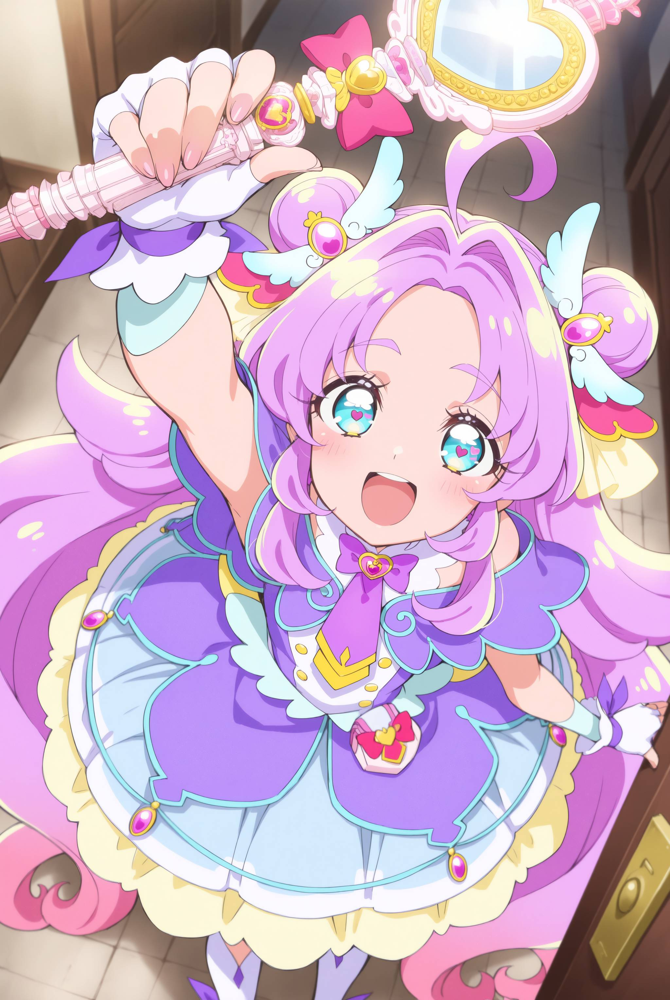
Illustrious
全般
cureanswer_v1
「cureanswer_v1」に特化した追加学習モデルです。Stable DiffusionでのAI画像生成にLoRAを導入し、特定要素の再現性を劇的に向上。効率的かつ高品質なビジュアルを求める全てのAI絵師必見のモデルです。
Size: 228,453,100 bytes
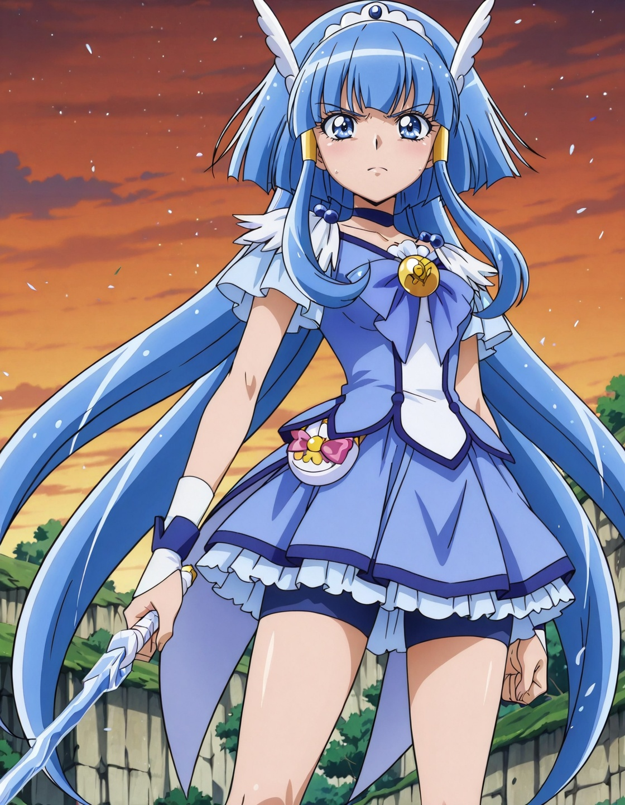
Illustrious
全般
curebeauty_IL
「curebeauty_IL」に特化した追加学習モデルです。Stable DiffusionでのAI画像生成にLoRAを導入し、特定要素の再現性を劇的に向上。効率的かつ高品質なビジュアルを求める全てのAI絵師必見のモデルです。
Size: 228,455,540 bytes
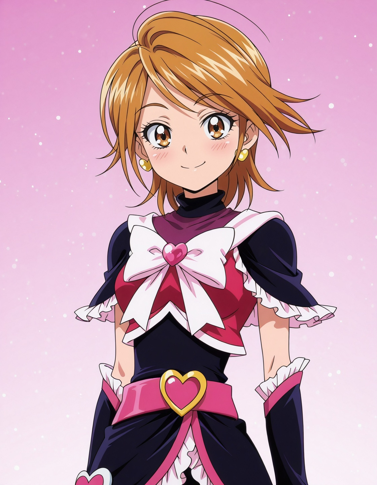
Illustrious
全般
cureblack_IL
「cureblack_IL」に特化した追加学習モデルです。Stable DiffusionでのAI画像生成にLoRAを導入し、特定要素の再現性を劇的に向上。効率的かつ高品質なビジュアルを求める全てのAI絵師必見のモデルです。
Size: 228,456,956 bytes
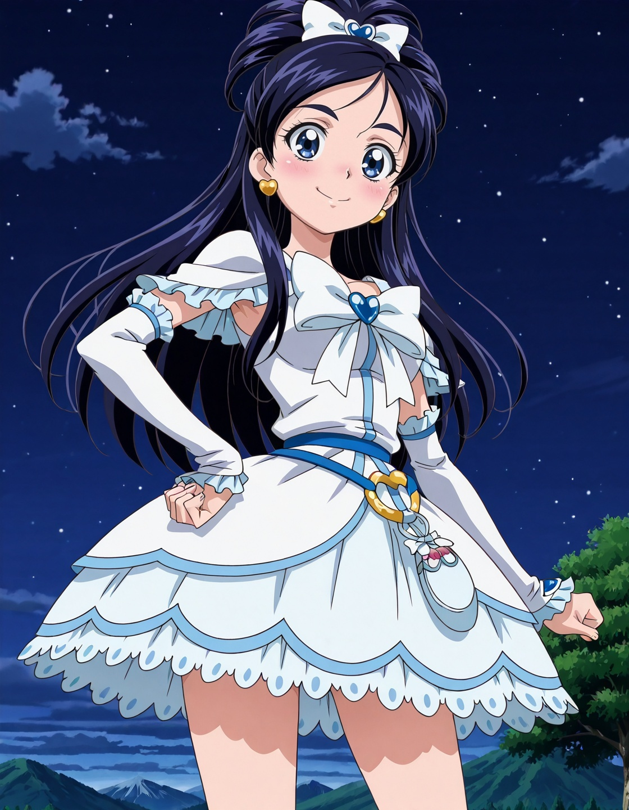
Illustrious
全般
curewhite_IL
「curewhite_IL」に特化した追加学習モデルです。Stable DiffusionでのAI画像生成にLoRAを導入し、特定要素の再現性を劇的に向上。効率的かつ高品質なビジュアルを求める全てのAI絵師必見のモデルです。
Size: 228,456,020 bytes
Illustrious
全般
DressingForPleasureJeansILL
「DressingForPleasureJeansILL」に特化した追加学習モデルです。Stable DiffusionでのAI画像生成にLoRAを導入し、特定要素の再現性を劇的に向上。効率的かつ高品質なビジュアルを求める全てのAI絵師必見のモデルです。
Size: 228,455,468 bytes
Illustrious
全般
E5B1B1E8BEBA20E78788.cADb
「E5B1B1E8BEBA20E78788.cADb」に特化した追加学習モデルです。Stable DiffusionでのAI画像生成にLoRAを導入し、特定要素の再現性を劇的に向上。効率的かつ高品質なビジュアルを求める全てのAI絵師必見のモデルです。
Size: 228,456,436 bytes
Illustrious
全般
E6A998E38182E3828AE38199E382A2E382A4E38389E383ABE3839EE382B9E3.WddO
「E6A998E38182E3828AE38199E382A2E382A4E38389E383ABE3839EE382B9E3.WddO」に特化した追加学習モデルです。Stable DiffusionでのAI画像生成にLoRAを導入し、特定要素の再現性を劇的に向上。効率的かつ高品質なビジュアルを求める全てのAI絵師必見のモデルです。
Size: 256,056,360 bytes
Illustrious
全般
E6ABBBE4BA95E6A183E88FAFEFBC88E382A2E382A4E38389E383ABE3839EE382.0maz
「E6ABBBE4BA95E6A183E88FAFEFBC88E382A2E382A4E38389E383ABE3839EE382.0maz」に特化した追加学習モデルです。Stable DiffusionでのAI画像生成にLoRAを導入し、特定要素の再現性を劇的に向上。効率的かつ高品質なビジュアルを求める全てのAI絵師必見のモデルです。
Size: 256,056,360 bytes
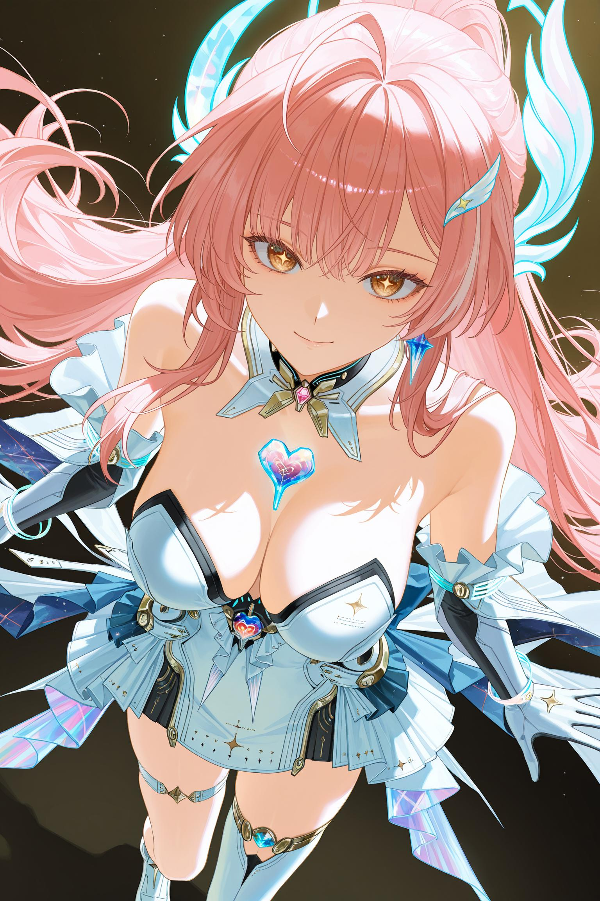
Illustrious
全般
E788B1E5BCA5E696AF20v1.bLWv
「E788B1E5BCA5E696AF20v1.bLWv」に特化した追加学習モデルです。Stable DiffusionでのAI画像生成にLoRAを導入し、特定要素の再現性を劇的に向上。効率的かつ高品質なビジュアルを求める全てのAI絵師必見のモデルです。
Size: 21,608,924 bytes
Illustrious
全般
E7B590E59F8EE699B4E382A2E382A4E38389E383ABE3839EE382B9E382BF.cTvO
「E7B590E59F8EE699B4E382A2E382A4E38389E383ABE3839EE382B9E382BF.cTvO」に特化した追加学習モデルです。Stable DiffusionでのAI画像生成にLoRAを導入し、特定要素の再現性を劇的に向上。効率的かつ高品質なビジュアルを求める全てのAI絵師必見のモデルです。
Size: 256,056,360 bytes
Illustrious
全般
Female_POV_1st_person_point_of_view
「Female_POV_1st_person_point_of_view」に特化した追加学習モデルです。Stable DiffusionでのAI画像生成にLoRAを導入し、特定要素の再現性を劇的に向上。効率的かつ高品質なビジュアルを求める全てのAI絵師必見のモデルです。
Size: 228,462,156 bytes
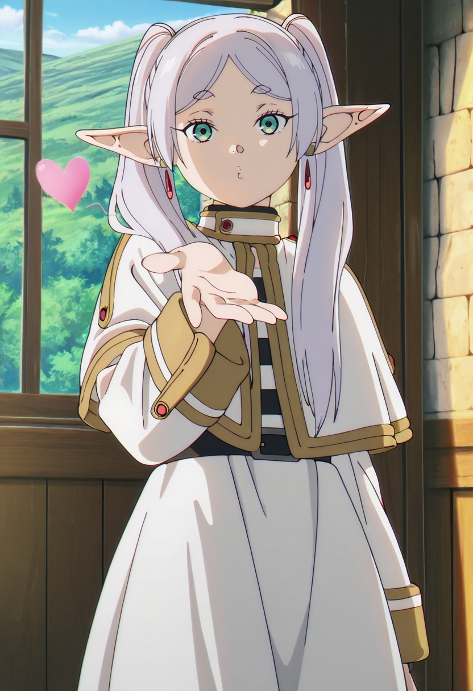
Illustrious
全般
Frieren_Sousou_no_Frieren
「Frieren_Sousou_no_Frieren」に特化した追加学習モデルです。Stable DiffusionでのAI画像生成にLoRAを導入し、特定要素の再現性を劇的に向上。効率的かつ高品質なビジュアルを求める全てのAI絵師必見のモデルです。
Size: 228,468,676 bytes
.preview.jpg)
Illustrious
全般
fukuda_mai( Kozukuri_sukebe_variety TV de utsushite mo daijoubu daa)
「fukuda_mai( Kozukuri_sukebe_variety TV de utsushite mo daijoubu daa)」に特化した追加学習モデルです。Stable DiffusionでのAI画像生成にLoRAを導入し、特定要素の再現性を劇的に向上。効率的かつ高品質なビジュアルを求める全てのAI絵師必見のモデルです。
Size: 256,056,360 bytes
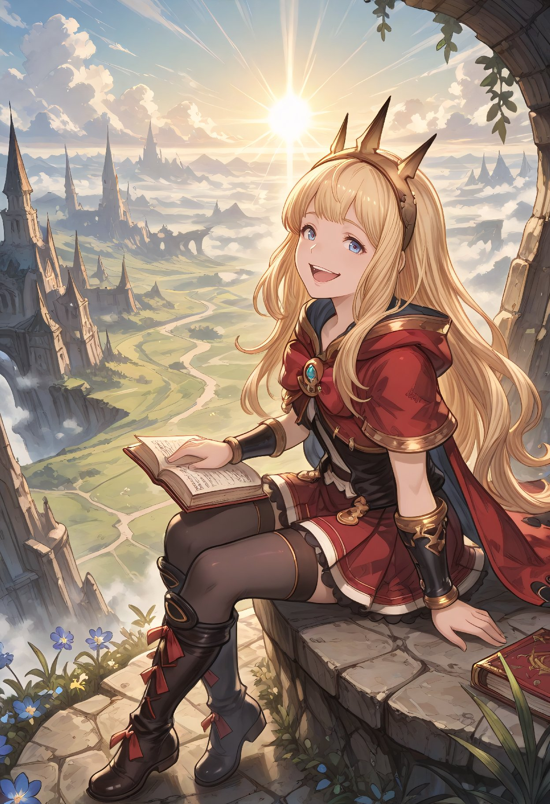
Illustrious
全般
Granblue_Fantasy_-_Cagliostro_A1
「Granblue_Fantasy_-_Cagliostro_A1」に特化した追加学習モデルです。Stable DiffusionでのAI画像生成にLoRAを導入し、特定要素の再現性を劇的に向上。効率的かつ高品質なビジュアルを求める全てのAI絵師必見のモデルです。
Size: 57,443,436 bytes

Illustrious
全般
GreatSwordIL
「GreatSwordIL」に特化した追加学習モデルです。Stable DiffusionでのAI画像生成にLoRAを導入し、特定要素の再現性を劇的に向上。効率的かつ高品質なビジュアルを求める全てのAI絵師必見のモデルです。
Size: 228,453,444 bytes

Illustrious
全般
HailoFantasyPackV1
「HailoFantasyPackV1」に特化した追加学習モデルです。Stable DiffusionでのAI画像生成にLoRAを導入し、特定要素の再現性を劇的に向上。効率的かつ高品質なビジュアルを求める全てのAI絵師必見のモデルです。
Size: 228,453,404 bytes
Illustrious
全般
headshelf-000002
「headshelf-000002」に特化した追加学習モデルです。Stable DiffusionでのAI画像生成にLoRAを導入し、特定要素の再現性を劇的に向上。効率的かつ高品質なビジュアルを求める全てのAI絵師必見のモデルです。
Size: 228,470,964 bytes
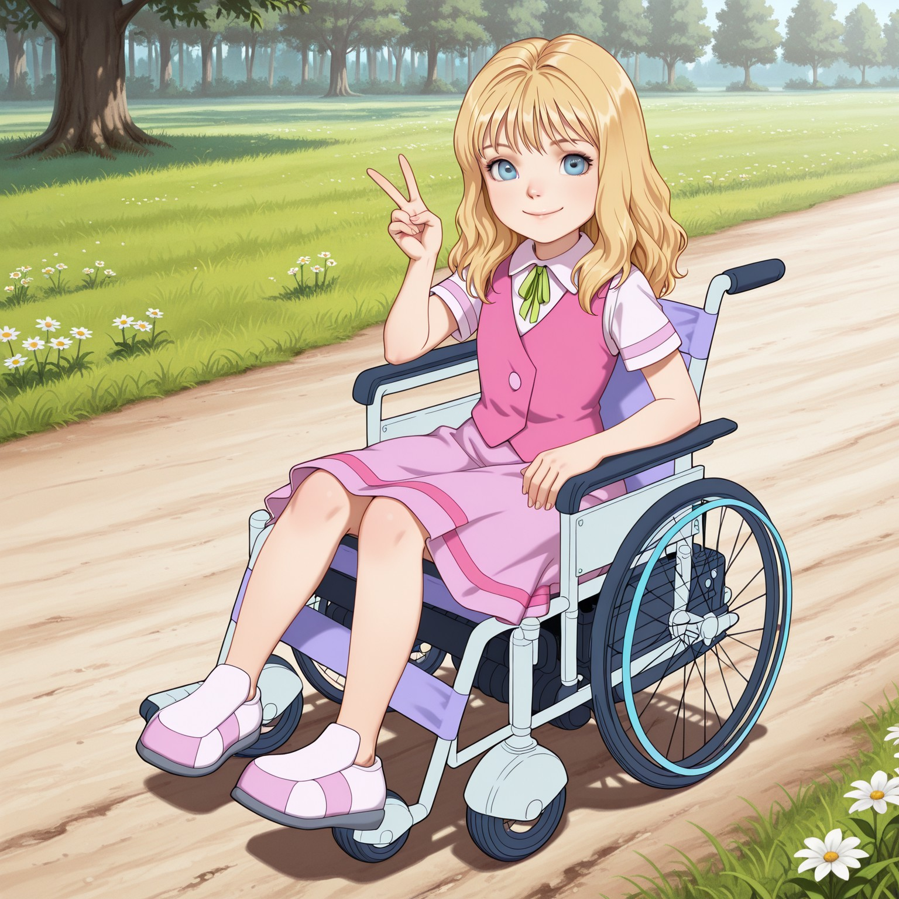
Illustrious
全般
Helen_Sonic_X
「Helen_Sonic_X」に特化した追加学習モデルです。Stable DiffusionでのAI画像生成にLoRAを導入し、特定要素の再現性を劇的に向上。効率的かつ高品質なビジュアルを求める全てのAI絵師必見のモデルです。
Size: 228,456,900 bytes

Illustrious
全般
hkmechaILv2
「hkmechaILv2」に特化した追加学習モデルです。Stable DiffusionでのAI画像生成にLoRAを導入し、特定要素の再現性を劇的に向上。効率的かつ高品質なビジュアルを求める全てのAI絵師必見のモデルです。
Size: 228,453,284 bytes
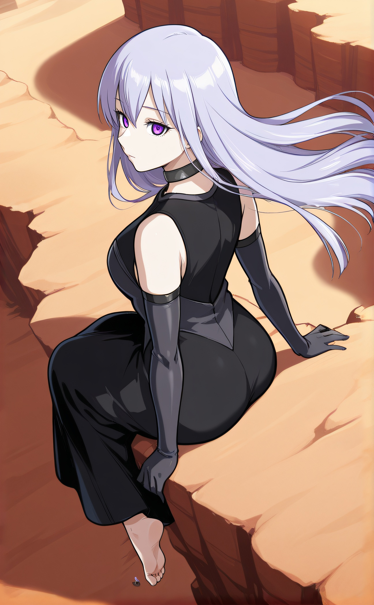
Illustrious
全般
IL26_Close_V2
「IL26_Close_V2」に特化した追加学習モデルです。Stable DiffusionでのAI画像生成にLoRAを導入し、特定要素の再現性を劇的に向上。効率的かつ高品質なビジュアルを求める全てのAI絵師必見のモデルです。
Size: 85,935,964 bytes
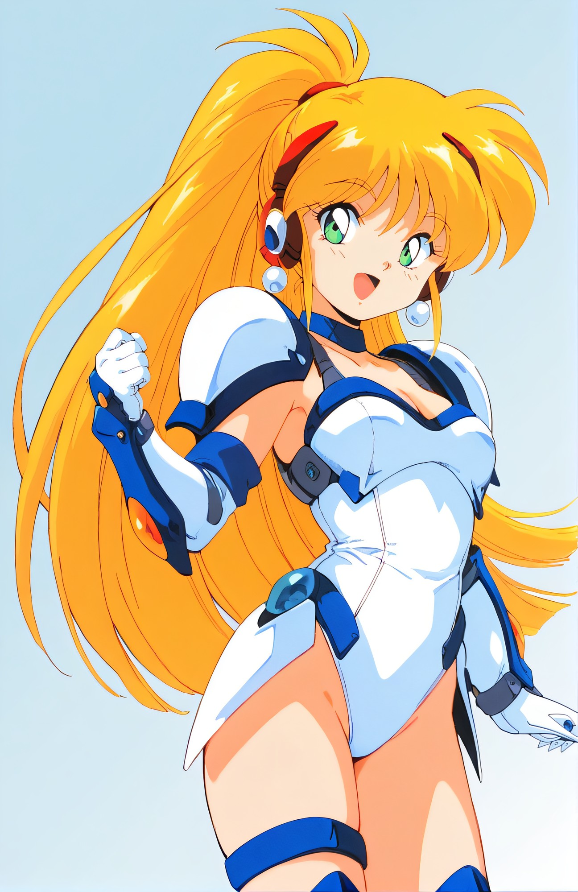
Illustrious
全般
IL26_Kagurazaka_Yuna
「IL26_Kagurazaka_Yuna」に特化した追加学習モデルです。Stable DiffusionでのAI画像生成にLoRAを導入し、特定要素の再現性を劇的に向上。効率的かつ高品質なビジュアルを求める全てのAI絵師必見のモデルです。
Size: 85,931,788 bytes
Illustrious
全般
IL26_Kobu_Mori_Style
「IL26_Kobu_Mori_Style」に特化した追加学習モデルです。Stable DiffusionでのAI画像生成にLoRAを導入し、特定要素の再現性を劇的に向上。効率的かつ高品質なビジュアルを求める全てのAI絵師必見のモデルです。
Size: 85,957,260 bytes

Illustrious
全般
IL_dush style-000070
「IL_dush style-000070」に特化した追加学習モデルです。Stable DiffusionでのAI画像生成にLoRAを導入し、特定要素の再現性を劇的に向上。効率的かつ高品質なビジュアルを求める全てのAI絵師必見のモデルです。
Size: 280,928,584 bytes

Illustrious
全般
IL_Monegi Style V2-000040
「IL_Monegi Style V2-000040」に特化した追加学習モデルです。Stable DiffusionでのAI画像生成にLoRAを導入し、特定要素の再現性を劇的に向上。効率的かつ高品質なビジュアルを求める全てのAI絵師必見のモデルです。
Size: 280,937,232 bytes
Illustrious
全般
IL_Okasa_Re_Taii_V2
「IL_Okasa_Re_Taii_V2」に特化した追加学習モデルです。Stable DiffusionでのAI画像生成にLoRAを導入し、特定要素の再現性を劇的に向上。効率的かつ高品質なビジュアルを求める全てのAI絵師必見のモデルです。
Size: 281,013,328 bytes

Illustrious
全般
IL_Youko_Mano_-_Demon_Hunter_Youko
「IL_Youko_Mano_-_Demon_Hunter_Youko」に特化した追加学習モデルです。Stable DiffusionでのAI画像生成にLoRAを導入し、特定要素の再現性を劇的に向上。効率的かつ高品質なビジュアルを求める全てのAI絵師必見のモデルです。
Size: 228,457,060 bytes
Illustrious
全般
kaga_nazuna_9th_1_1-09
「kaga_nazuna_9th_1_1-09」に特化した追加学習モデルです。Stable DiffusionでのAI画像生成にLoRAを導入し、特定要素の再現性を劇的に向上。効率的かつ高品質なビジュアルを求める全てのAI絵師必見のモデルです。
Size: 50,946,012 bytes
Illustrious
全般
kaga_sumire_9th_1_2-07
「kaga_sumire_9th_1_2-07」に特化した追加学習モデルです。Stable DiffusionでのAI画像生成にLoRAを導入し、特定要素の再現性を劇的に向上。効率的かつ高品質なビジュアルを求める全てのAI絵師必見のモデルです。
Size: 50,960,572 bytes
Illustrious
全般
Kasumi_Matsubara-Hitozuma_Kasumi-san-IL
「Kasumi_Matsubara-Hitozuma_Kasumi-san-IL」に特化した追加学習モデルです。Stable DiffusionでのAI画像生成にLoRAを導入し、特定要素の再現性を劇的に向上。効率的かつ高品質なビジュアルを求める全てのAI絵師必見のモデルです。
Size: 228,474,268 bytes
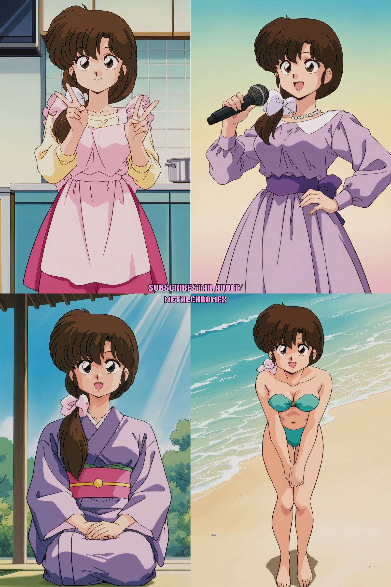
Illustrious
全般
Kasumi_Tendo_Ranma_12_1989_style
「Kasumi_Tendo_Ranma_12_1989_style」に特化した追加学習モデルです。Stable DiffusionでのAI画像生成にLoRAを導入し、特定要素の再現性を劇的に向上。効率的かつ高品質なビジュアルを求める全てのAI絵師必見のモデルです。
Size: 228,470,484 bytes

Illustrious
全般
KatanaChargeIL
「KatanaChargeIL」に特化した追加学習モデルです。Stable DiffusionでのAI画像生成にLoRAを導入し、特定要素の再現性を劇的に向上。効率的かつ高品質なビジュアルを求める全てのAI絵師必見のモデルです。
Size: 228,453,300 bytes

Illustrious
全般
Kino Makoto
「Kino Makoto」に特化した追加学習モデルです。Stable DiffusionでのAI画像生成にLoRAを導入し、特定要素の再現性を劇的に向上。効率的かつ高品質なビジュアルを求める全てのAI絵師必見のモデルです。
Size: 228,455,140 bytes
Illustrious
全般
kobayashimikuru_v1.0_IL
「kobayashimikuru_v1.0_IL」に特化した追加学習モデルです。Stable DiffusionでのAI画像生成にLoRAを導入し、特定要素の再現性を劇的に向上。効率的かつ高品質なビジュアルを求める全てのAI絵師必見のモデルです。
Size: 228,458,460 bytes
Illustrious
全般
kurii89800727ILL
「kurii89800727ILL」に特化した追加学習モデルです。Stable DiffusionでのAI画像生成にLoRAを導入し、特定要素の再現性を劇的に向上。効率的かつ高品質なビジュアルを求める全てのAI絵師必見のモデルです。
Size: 228,483,028 bytes
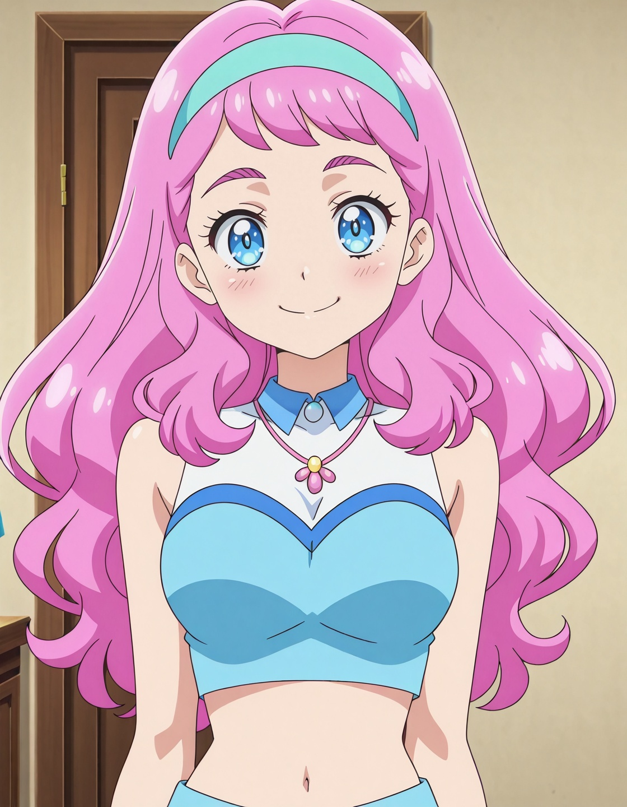
Illustrious
全般
lauralamer_IL
「lauralamer_IL」に特化した追加学習モデルです。Stable DiffusionでのAI画像生成にLoRAを導入し、特定要素の再現性を劇的に向上。効率的かつ高品質なビジュアルを求める全てのAI絵師必見のモデルです。
Size: 228,459,388 bytes
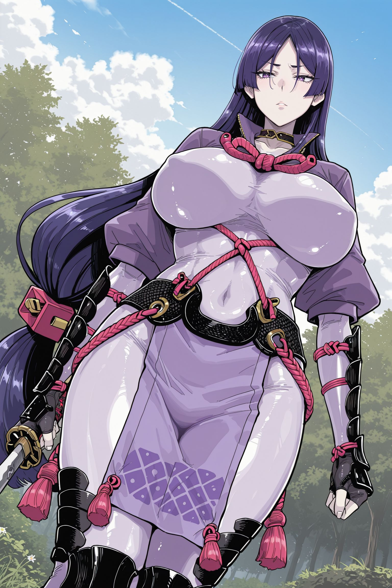
Illustrious
全般
mafic_5ty1e_v3
「mafic_5ty1e_v3」に特化した追加学習モデルです。Stable DiffusionでのAI画像生成にLoRAを導入し、特定要素の再現性を劇的に向上。効率的かつ高品質なビジュアルを求める全てのAI絵師必見のモデルです。
Size: 228,469,816 bytes

Illustrious
全般
Mari Spirit GrandChase
「Mari Spirit GrandChase」に特化した追加学習モデルです。Stable DiffusionでのAI画像生成にLoRAを導入し、特定要素の再現性を劇的に向上。効率的かつ高品質なビジュアルを求める全てのAI絵師必見のモデルです。
Size: 256,056,360 bytes
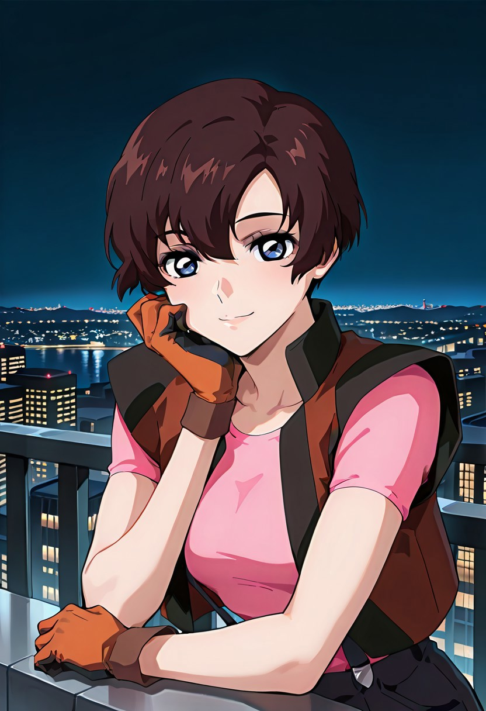
Illustrious
全般
mAYURA8
「mAYURA8」に特化した追加学習モデルです。Stable DiffusionでのAI画像生成にLoRAを導入し、特定要素の再現性を劇的に向上。効率的かつ高品質なビジュアルを求める全てのAI絵師必見のモデルです。
Size: 228,454,740 bytes
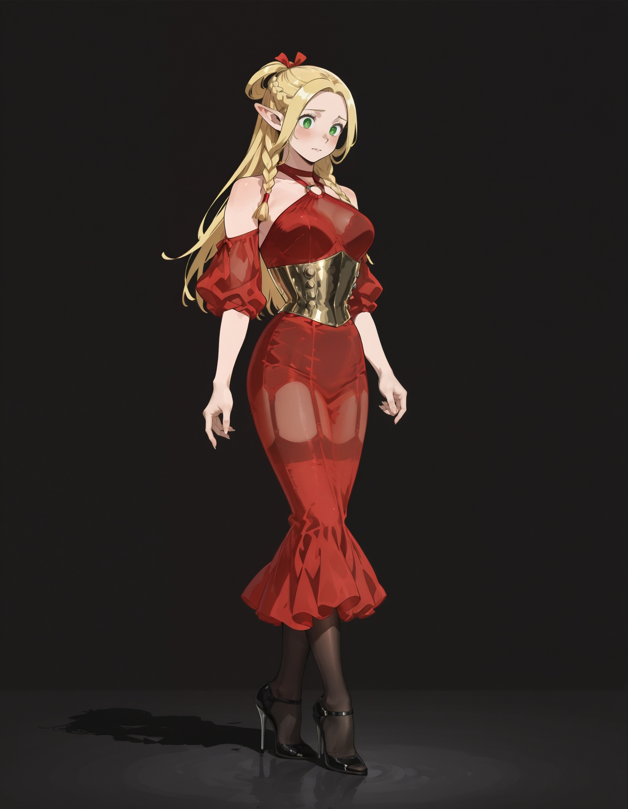
Illustrious
全般
MetalCorsetSheerRetroHalterDressILLV2
「MetalCorsetSheerRetroHalterDressILLV2」に特化した追加学習モデルです。Stable DiffusionでのAI画像生成にLoRAを導入し、特定要素の再現性を劇的に向上。効率的かつ高品質なビジュアルを求める全てのAI絵師必見のモデルです。
Size: 228,454,892 bytes
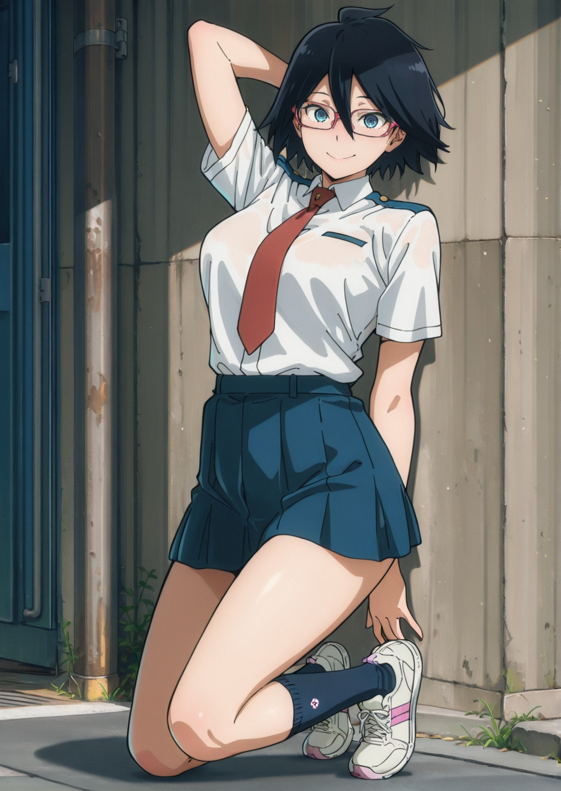
Illustrious
全般
Midnight_Vigilante_r2
「Midnight_Vigilante_r2」に特化した追加学習モデルです。Stable DiffusionでのAI画像生成にLoRAを導入し、特定要素の再現性を劇的に向上。効率的かつ高品質なビジュアルを求める全てのAI絵師必見のモデルです。
Size: 228,472,012 bytes
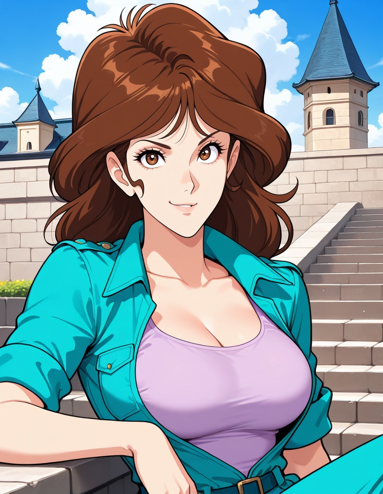
Illustrious
全般
mine_fujiko_pt3
「mine_fujiko_pt3」に特化した追加学習モデルです。Stable DiffusionでのAI画像生成にLoRAを導入し、特定要素の再現性を劇的に向上。効率的かつ高品質なビジュアルを求める全てのAI絵師必見のモデルです。
Size: 28,917,436 bytes
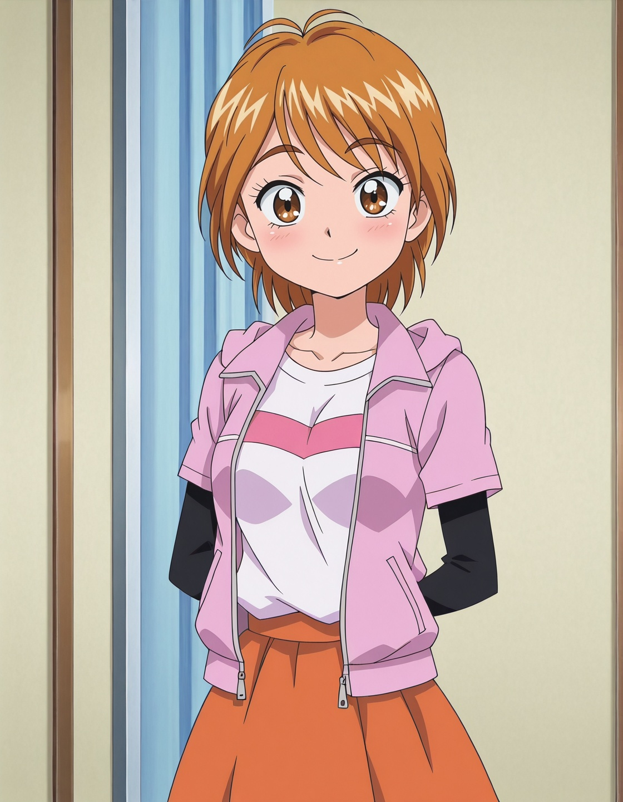
Illustrious
全般
misuminagisa_IL
「misuminagisa_IL」に特化した追加学習モデルです。Stable DiffusionでのAI画像生成にLoRAを導入し、特定要素の再現性を劇的に向上。効率的かつ高品質なビジュアルを求める全てのAI絵師必見のモデルです。
Size: 228,457,444 bytes
Illustrious
全般
MRN0093ILL
「MRN0093ILL」に特化した追加学習モデルです。Stable DiffusionでのAI画像生成にLoRAを導入し、特定要素の再現性を劇的に向上。効率的かつ高品質なビジュアルを求める全てのAI絵師必見のモデルです。
Size: 228,470,228 bytes
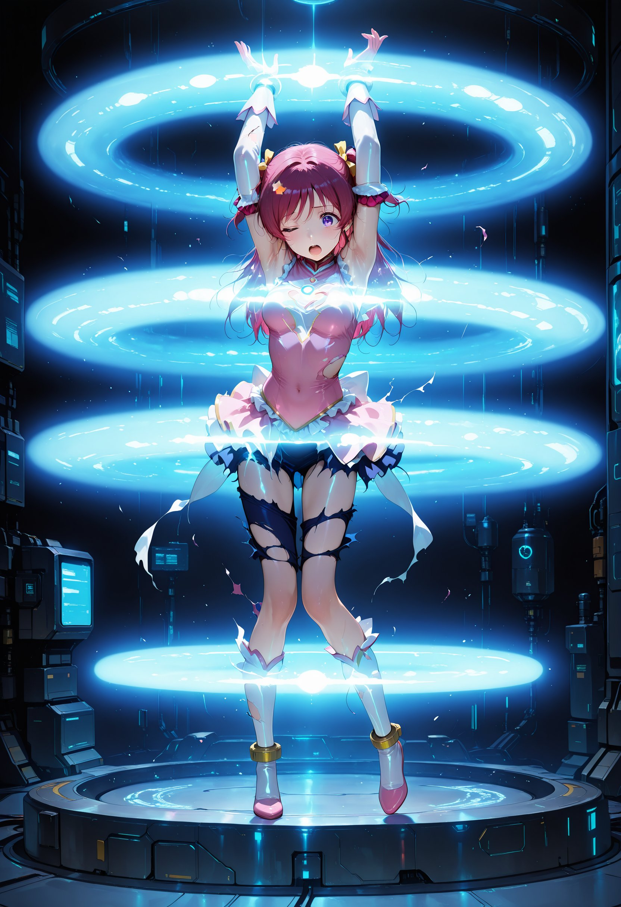
Illustrious
全般
multiple_glowing_ring
「multiple_glowing_ring」に特化した追加学習モデルです。Stable DiffusionでのAI画像生成にLoRAを導入し、特定要素の再現性を劇的に向上。効率的かつ高品質なビジュアルを求める全てのAI絵師必見のモデルです。
Size: 228,456,100 bytes
Illustrious
全般
NakiriAyame_Hololive_Part01_IL-03
「NakiriAyame_Hololive_Part01_IL-03」に特化した追加学習モデルです。Stable DiffusionでのAI画像生成にLoRAを導入し、特定要素の再現性を劇的に向上。効率的かつ高品質なビジュアルを求める全てのAI絵師必見のモデルです。
Size: 50,985,652 bytes
Illustrious
全般
nanpamisa_IL1-200009
「nanpamisa_IL1-200009」に特化した追加学習モデルです。Stable DiffusionでのAI画像生成にLoRAを導入し、特定要素の再現性を劇的に向上。効率的かつ高品質なビジュアルを求める全てのAI絵師必見のモデルです。
Size: 172,062,896 bytes

Illustrious
全般
noel anderson
「noel anderson」に特化した追加学習モデルです。Stable DiffusionでのAI画像生成にLoRAを導入し、特定要素の再現性を劇的に向上。効率的かつ高品質なビジュアルを求める全てのAI絵師必見のモデルです。
Size: 228,456,108 bytes
Illustrious
全般
Pink_3
「Pink_3」に特化した追加学習モデルです。Stable DiffusionでのAI画像生成にLoRAを導入し、特定要素の再現性を劇的に向上。効率的かつ高品質なビジュアルを求める全てのAI絵師必見のモデルです。
Size: 114,437,516 bytes
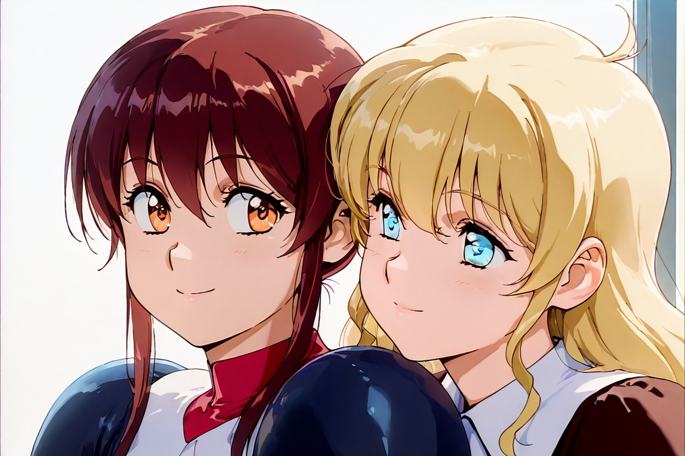
Illustrious
全般
plastic_little_retry
「plastic_little_retry」に特化した追加学習モデルです。Stable DiffusionでのAI画像生成にLoRAを導入し、特定要素の再現性を劇的に向上。効率的かつ高品質なビジュアルを求める全てのAI絵師必見のモデルです。
Size: 340,778,020 bytes
Illustrious
全般
QAQv5p2_IL-40
「QAQv5p2_IL-40」に特化した追加学習モデルです。Stable DiffusionでのAI画像生成にLoRAを導入し、特定要素の再現性を劇的に向上。効率的かつ高品質なビジュアルを求める全てのAI絵師必見のモデルです。
Size: 80,424,920 bytes
Illustrious
全般
Reisalin_Stout4-000003
「Reisalin_Stout4-000003」に特化した追加学習モデルです。Stable DiffusionでのAI画像生成にLoRAを導入し、特定要素の再現性を劇的に向上。効率的かつ高品質なビジュアルを求める全てのAI絵師必見のモデルです。
Size: 114,435,844 bytes
Illustrious
全般
RibbonThighhighsILL
「RibbonThighhighsILL」に特化した追加学習モデルです。Stable DiffusionでのAI画像生成にLoRAを導入し、特定要素の再現性を劇的に向上。効率的かつ高品質なビジュアルを求める全てのAI絵師必見のモデルです。
Size: 228,454,212 bytes
Illustrious
全般
Rinchans-10
「Rinchans-10」に特化した追加学習モデルです。Stable DiffusionでのAI画像生成にLoRAを導入し、特定要素の再現性を劇的に向上。効率的かつ高品質なビジュアルを求める全てのAI絵師必見のモデルです。
Size: 50,944,116 bytes
Illustrious
全般
RMcharlotte_v2_LISETTElora
「RMcharlotte_v2_LISETTElora」に特化した追加学習モデルです。Stable DiffusionでのAI画像生成にLoRAを導入し、特定要素の再現性を劇的に向上。効率的かつ高品質なビジュアルを求める全てのAI絵師必見のモデルです。
Size: 57,434,804 bytes
Illustrious
全般
Rockstar_Bao
「Rockstar_Bao」に特化した追加学習モデルです。Stable DiffusionでのAI画像生成にLoRAを導入し、特定要素の再現性を劇的に向上。効率的かつ高品質なビジュアルを求める全てのAI絵師必見のモデルです。
Size: 228,460,220 bytes
Illustrious
全般
rtkt(santa)_5ty1e_v4
「rtkt(santa)_5ty1e_v4」に特化した追加学習モデルです。Stable DiffusionでのAI画像生成にLoRAを導入し、特定要素の再現性を劇的に向上。効率的かつ高品質なビジュアルを求める全てのAI絵師必見のモデルです。
Size: 228,480,212 bytes

Illustrious
全般
Saeko_Busujima_Highschool_of_the_Dead13
「Saeko_Busujima_Highschool_of_the_Dead13」に特化した追加学習モデルです。Stable DiffusionでのAI画像生成にLoRAを導入し、特定要素の再現性を劇的に向上。効率的かつ高品質なビジュアルを求める全てのAI絵師必見のモデルです。
Size: 228,535,552 bytes
Illustrious
全般
Sategaya_Mari_Itadaki_Seieki
「Sategaya_Mari_Itadaki_Seieki」に特化した追加学習モデルです。Stable DiffusionでのAI画像生成にLoRAを導入し、特定要素の再現性を劇的に向上。効率的かつ高品質なビジュアルを求める全てのAI絵師必見のモデルです。
Size: 228,456,588 bytes

Illustrious
全般
ScathachV2_Fate_Series
「ScathachV2_Fate_Series」に特化した追加学習モデルです。Stable DiffusionでのAI画像生成にLoRAを導入し、特定要素の再現性を劇的に向上。効率的かつ高品質なビジュアルを求める全てのAI絵師必見のモデルです。
Size: 228,469,140 bytes
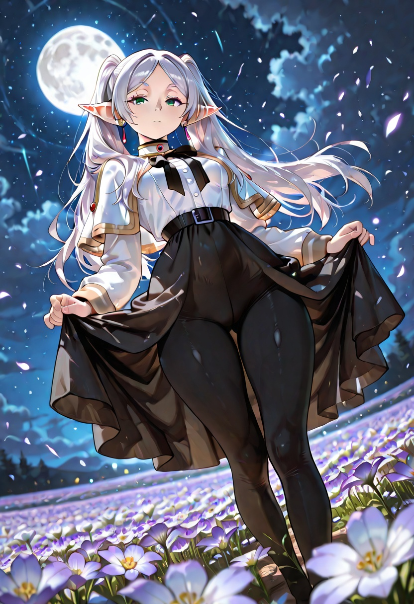
Illustrious
全般
Semi-realistic-000012
「Semi-realistic-000012」に特化した追加学習モデルです。Stable DiffusionでのAI画像生成にLoRAを導入し、特定要素の再現性を劇的に向上。効率的かつ高品質なビジュアルを求める全てのAI絵師必見のモデルです。
Size: 228,455,964 bytes
Illustrious
全般
sh1gur3_rouwei_1200
「sh1gur3_rouwei_1200」に特化した追加学習モデルです。Stable DiffusionでのAI画像生成にLoRAを導入し、特定要素の再現性を劇的に向上。効率的かつ高品質なビジュアルを求める全てのAI絵師必見のモデルです。
Size: 186,046,568 bytes
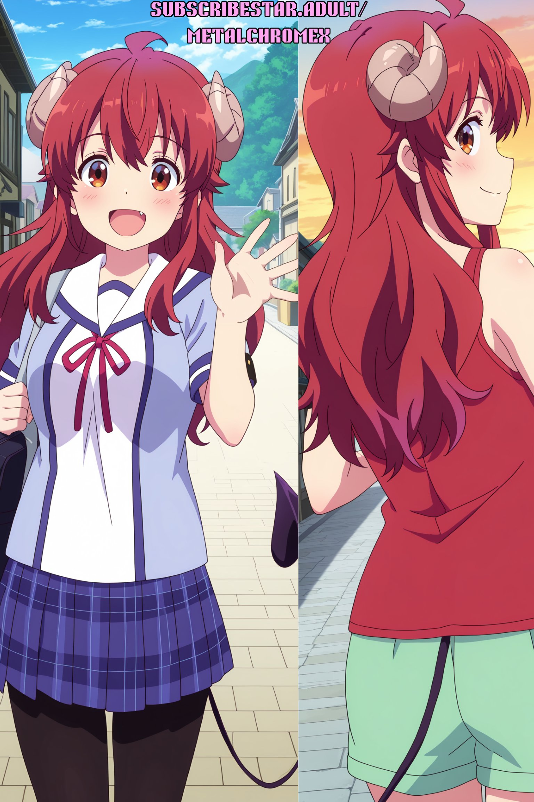
Illustrious
全般
ShamikoYuuko_Yoshida_Machikado_MazokuThe_Demon_Girl_Next_Door
「ShamikoYuuko_Yoshida_Machikado_MazokuThe_Demon_Girl_Next_Door」に特化した追加学習モデルです。Stable DiffusionでのAI画像生成にLoRAを導入し、特定要素の再現性を劇的に向上。効率的かつ高品質なビジュアルを求める全てのAI絵師必見のモデルです。
Size: 114,436,908 bytes
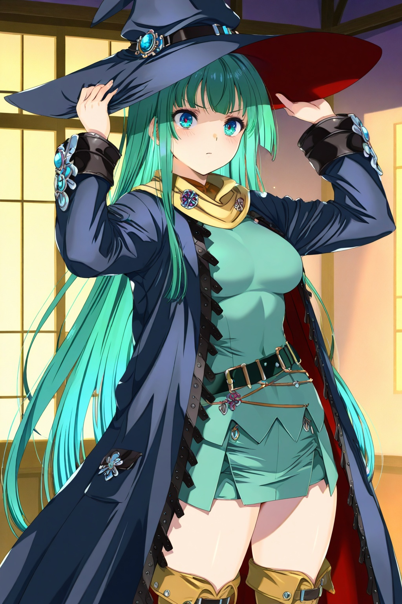
Illustrious
全般
Shizuka-Masou_lL_v03
「Shizuka-Masou_lL_v03」に特化した追加学習モデルです。Stable DiffusionでのAI画像生成にLoRAを導入し、特定要素の再現性を劇的に向上。効率的かつ高品質なビジュアルを求める全てのAI絵師必見のモデルです。
Size: 114,433,188 bytes
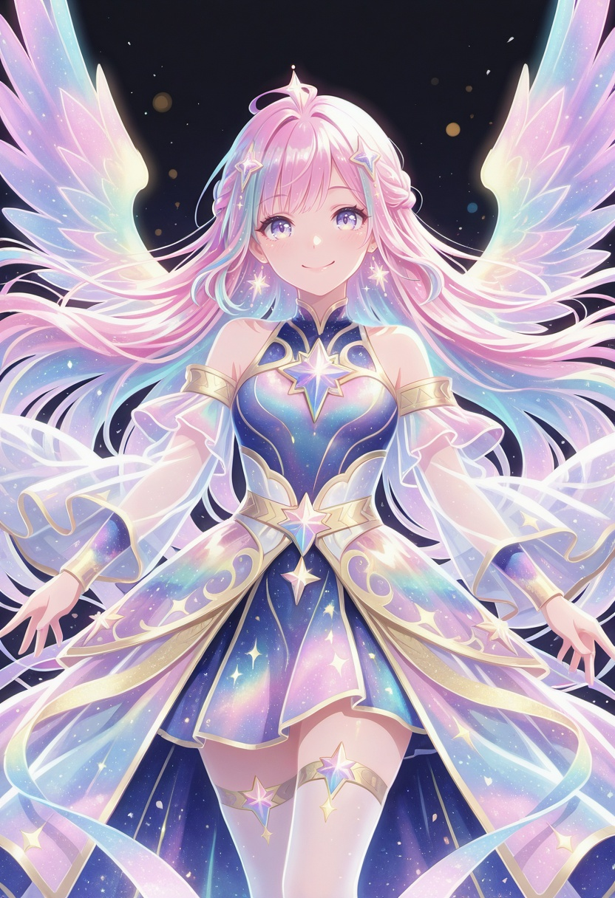
Illustrious
全般
Stardust_Goddess
「Stardust_Goddess」に特化した追加学習モデルです。Stable DiffusionでのAI画像生成にLoRAを導入し、特定要素の再現性を劇的に向上。効率的かつ高品質なビジュアルを求める全てのAI絵師必見のモデルです。
Size: 228,460,308 bytes
Illustrious
全般
sugou_retry
「sugou_retry」に特化した追加学習モデルです。Stable DiffusionでのAI画像生成にLoRAを導入し、特定要素の再現性を劇的に向上。効率的かつ高品質なビジュアルを求める全てのAI絵師必見のモデルです。
Size: 340,776,884 bytes
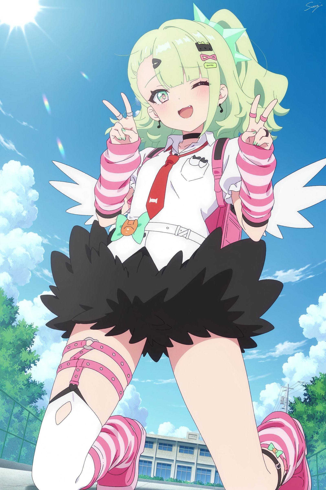
Illustrious
全般
Sunna
「Sunna」に特化した追加学習モデルです。Stable DiffusionでのAI画像生成にLoRAを導入し、特定要素の再現性を劇的に向上。効率的かつ高品質なビジュアルを求める全てのAI絵師必見のモデルです。
Size: 114,437,332 bytes
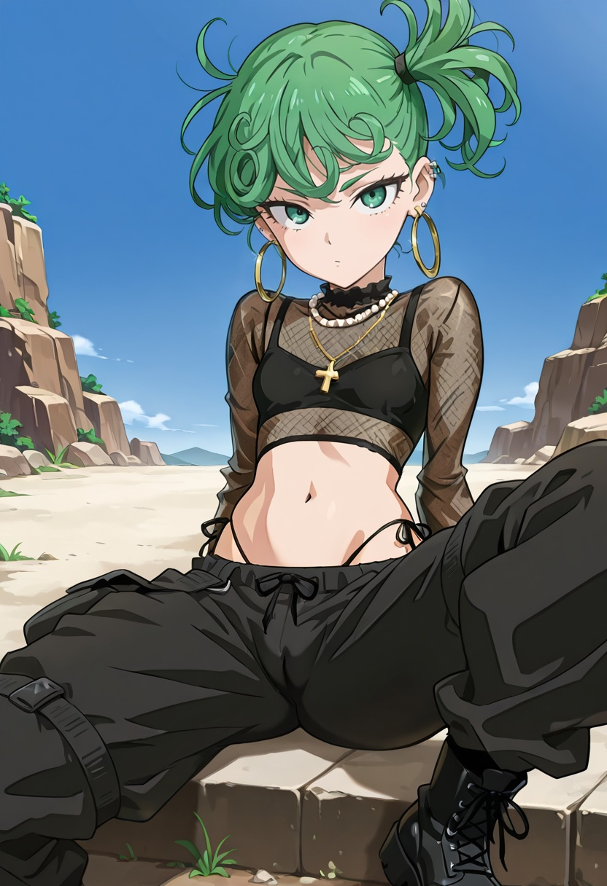
Illustrious
全般
Tatsumaki_One-Punch_Man
「Tatsumaki_One-Punch_Man」に特化した追加学習モデルです。Stable DiffusionでのAI画像生成にLoRAを導入し、特定要素の再現性を劇的に向上。効率的かつ高品質なビジュアルを求める全てのAI絵師必見のモデルです。
Size: 228,465,204 bytes

Illustrious
全般
Teana Lanster V2
「Teana Lanster V2」に特化した追加学習モデルです。Stable DiffusionでのAI画像生成にLoRAを導入し、特定要素の再現性を劇的に向上。効率的かつ高品質なビジュアルを求める全てのAI絵師必見のモデルです。
Size: 114,436,484 bytes

Illustrious
全般
Tomoe Hotaru
「Tomoe Hotaru」に特化した追加学習モデルです。Stable DiffusionでのAI画像生成にLoRAを導入し、特定要素の再現性を劇的に向上。効率的かつ高品質なビジュアルを求める全てのAI絵師必見のモデルです。
Size: 228,457,188 bytes
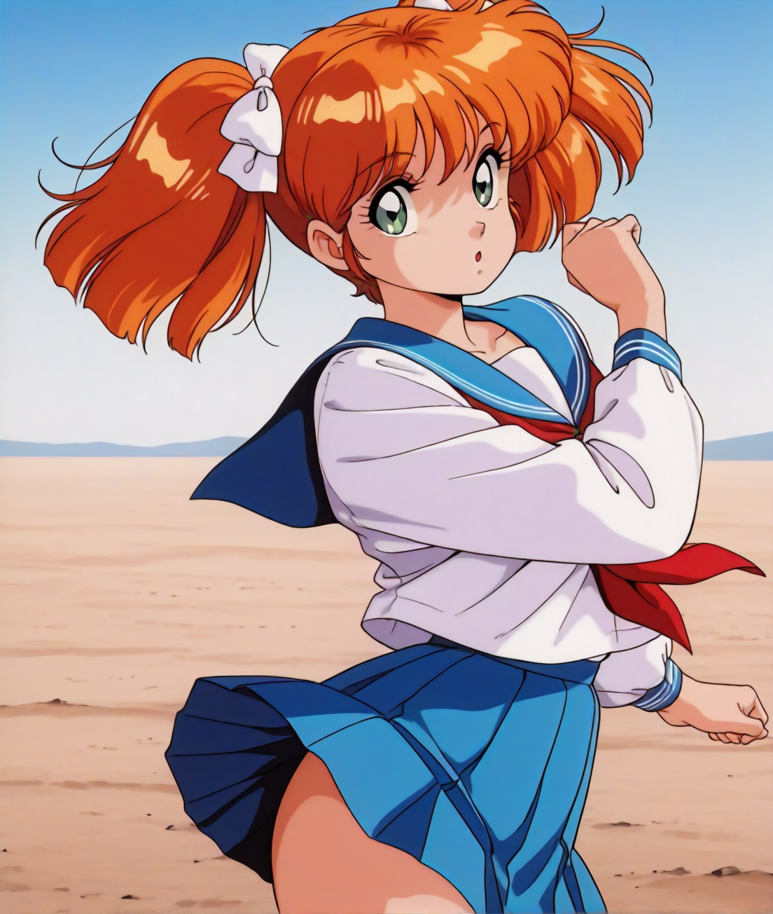
Illustrious
全般
tomoILV1
「tomoILV1」に特化した追加学習モデルです。Stable DiffusionでのAI画像生成にLoRAを導入し、特定要素の再現性を劇的に向上。効率的かつ高品質なビジュアルを求める全てのAI絵師必見のモデルです。
Size: 456,490,580 bytes

Illustrious
全般
TrickWeaponSwitch-AxeIL
「TrickWeaponSwitch-AxeIL」に特化した追加学習モデルです。Stable DiffusionでのAI画像生成にLoRAを導入し、特定要素の再現性を劇的に向上。効率的かつ高品質なビジュアルを求める全てのAI絵師必見のモデルです。
Size: 228,453,308 bytes

Illustrious
全般
tsukumiya amanev3
「tsukumiya amanev3」に特化した追加学習モデルです。Stable DiffusionでのAI画像生成にLoRAを導入し、特定要素の再現性を劇的に向上。効率的かつ高品質なビジュアルを求める全てのAI絵師必見のモデルです。
Size: 256,056,360 bytes

Illustrious
全般
Tsumugi aipri
「Tsumugi aipri」に特化した追加学習モデルです。Stable DiffusionでのAI画像生成にLoRAを導入し、特定要素の再現性を劇的に向上。効率的かつ高品質なビジュアルを求める全てのAI絵師必見のモデルです。
Size: 114,438,932 bytes

Illustrious
全般
Ubel_Sousou_no_Frieren
「Ubel_Sousou_no_Frieren」に特化した追加学習モデルです。Stable DiffusionでのAI画像生成にLoRAを導入し、特定要素の再現性を劇的に向上。効率的かつ高品質なビジュアルを求める全てのAI絵師必見のモデルです。
Size: 228,457,780 bytes

Illustrious
全般
UnsheathingKatanaIL
「UnsheathingKatanaIL」に特化した追加学習モデルです。Stable DiffusionでのAI画像生成にLoRAを導入し、特定要素の再現性を劇的に向上。効率的かつ高品質なビジュアルを求める全てのAI絵師必見のモデルです。
Size: 228,453,428 bytes
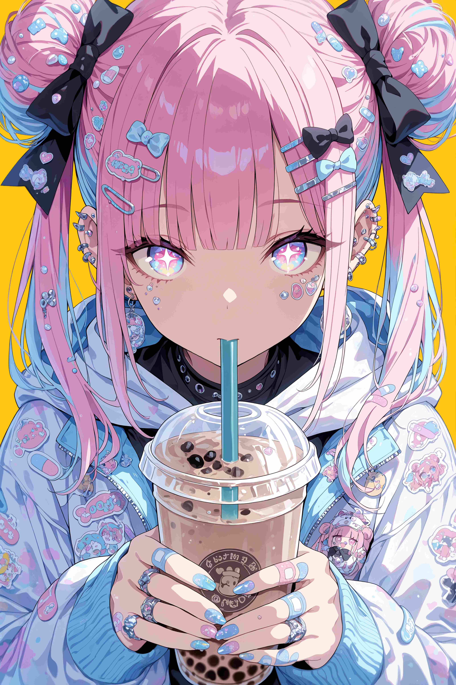
Illustrious
全般
Yolshv
「Yolshv」に特化した追加学習モデルです。Stable DiffusionでのAI画像生成にLoRAを導入し、特定要素の再現性を劇的に向上。効率的かつ高品質なビジュアルを求める全てのAI絵師必見のモデルです。
Size: 228,473,876 bytes
Illustrious
全般
Yui_Hoshizaki03
「Yui_Hoshizaki03」に特化した追加学習モデルです。Stable DiffusionでのAI画像生成にLoRAを導入し、特定要素の再現性を劇的に向上。効率的かつ高品質なビジュアルを求める全てのAI絵師必見のモデルです。
Size: 228,455,116 bytes

Illustrious
全般
yuzuhara konomiIL_v2
「yuzuhara konomiIL_v2」に特化した追加学習モデルです。Stable DiffusionでのAI画像生成にLoRAを導入し、特定要素の再現性を劇的に向上。効率的かつ高品質なビジュアルを求める全てのAI絵師必見のモデルです。
Size: 228,467,076 bytes
 Koshimizu Sachiko(THE IDOLM@STER CINDERELLA GIRLS).preview.jpg)
Illustrious
全般
輿水幸子(アイドルマスターシンデレラガールズ) Koshimizu Sachiko(THE IDOLM@STER CINDERELLA GIRLS)
「輿水幸子(アイドルマスターシンデレラガールズ) Koshimizu Sachiko(THE IDOLM@STER CINDERELLA GIRLS)」に特化した追加学習モデルです。Stable DiffusionでのAI画像生成にLoRAを導入し、特定要素の再現性を劇的に向上。効率的かつ高品質なビジュアルを求める全てのAI絵師必見のモデルです。
Size: 256,056,360 bytes
_ILXL.preview.jpg)
Illustrious
全般
wall_(concept)_ILXL
「wall_(concept)_ILXL」に特化した追加学習モデルです。Stable DiffusionでのAI画像生成にLoRAを導入し、特定要素の再現性を劇的に向上。効率的かつ高品質なビジュアルを求める全てのAI絵師必見のモデルです。
Size: 114,443,972 bytes
Illustrious
全般
XL-ClaudiaConstanzi-ERONA-ILXL
「XL-ClaudiaConstanzi-ERONA-ILXL」に特化した追加学習モデルです。Stable DiffusionでのAI画像生成にLoRAを導入し、特定要素の再現性を劇的に向上。効率的かつ高品質なビジュアルを求める全てのAI絵師必見のモデルです。
Size: 171,449,596 bytes
Illustrious
全般
XL-Rossweisse-K-Melkvi-v2-ILXL
「XL-Rossweisse-K-Melkvi-v2-ILXL」に特化した追加学習モデルです。Stable DiffusionでのAI画像生成にLoRAを導入し、特定要素の再現性を劇的に向上。効率的かつ高品質なビジュアルを求める全てのAI絵師必見のモデルです。
Size: 171,449,708 bytes
Illustrious
全般
XL-SakuragiMano-ILXL
「XL-SakuragiMano-ILXL」に特化した追加学習モデルです。Stable DiffusionでのAI画像生成にLoRAを導入し、特定要素の再現性を劇的に向上。効率的かつ高品質なビジュアルを求める全てのAI絵師必見のモデルです。
Size: 152,101,516 bytes
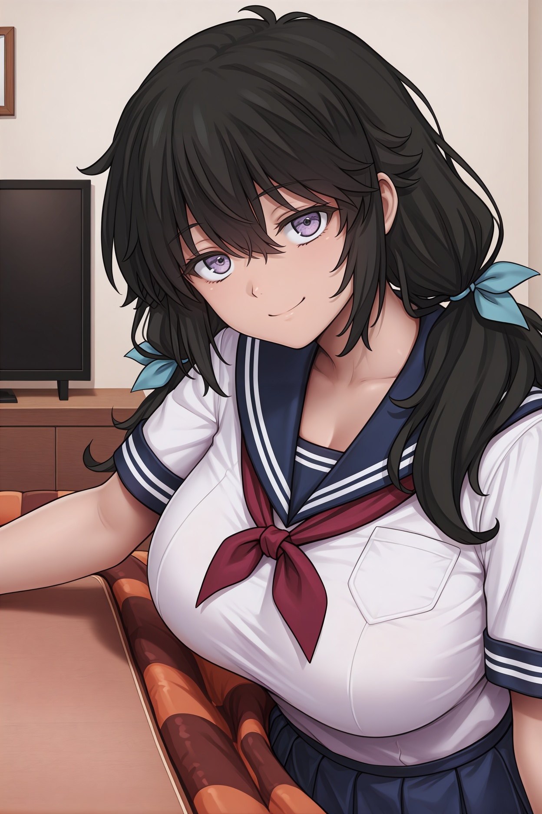
Illustrious
全般
hayakawanozomi-illu-nvwls-v1
「hayakawanozomi-illu-nvwls-v1」に特化した追加学習モデルです。Stable DiffusionでのAI画像生成にLoRAを導入し、特定要素の再現性を劇的に向上。効率的かつ高品質なビジュアルを求める全てのAI絵師必見のモデルです。
Size: 57,428,652 bytes